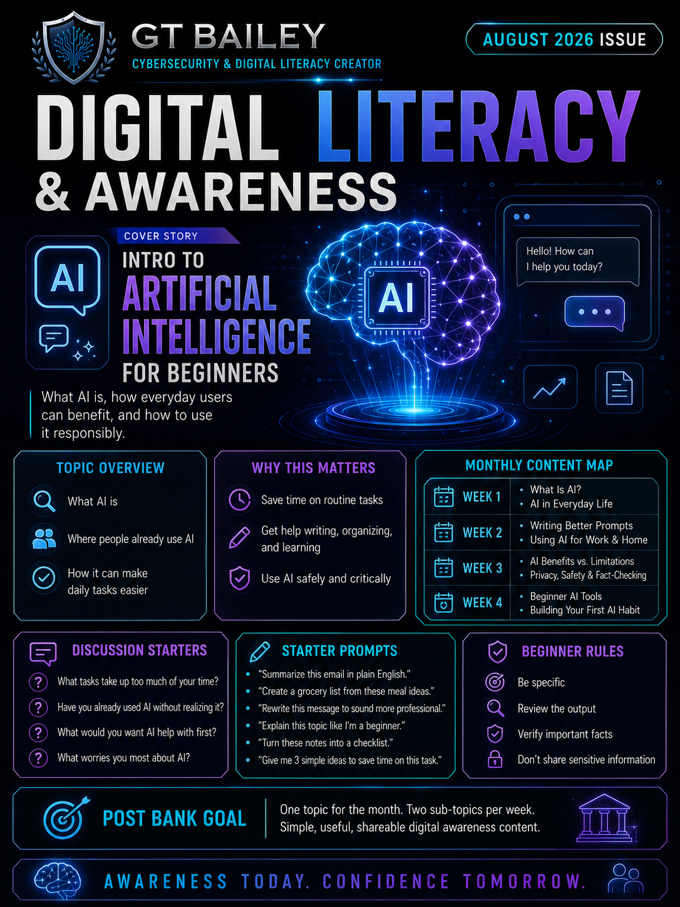

One connected device
A smartphone, tablet, desktop, or laptop is enough. Choose one reputable AI assistant and learn transferable skills.
12-week offline-ready curriculum
Thirty-six beginner-friendly micro-lessons for smarter tasks, safer habits, and everyday confidence - with no programming or paid AI subscription required.

Start Here
The course is designed for adult beginners, community learners, veterans, job seekers, older adults, nonprofit clients, and anyone with limited technical experience.
A smartphone, tablet, desktop, or laptop is enough. Choose one reputable AI assistant and learn transferable skills.
Introduce the concept, demonstrate the method, and apply the skill. Each lesson is designed for about 30-45 minutes.
Never enter passwords, identification numbers, payment details, confidential records, or sensitive client information.
Treat AI as an assistant. Review every result, verify what matters, and keep responsibility for final decisions.
Learning Library | Featured Course
The prototype combines editorial reading with quiet learner tools: contents, bookmarks, resume reading, adjustable text, saved prompts, a quick check, and private reflection.
August course edition: orientation pages and the complete twelve-lesson Module 1 with layered activities.
Three-module pathway
The sequence moves from understanding AI, to using it for real tasks, to applying independent judgment and sustainable habits.
Weeks 1-4 | Lessons 1-12
Learn what AI is, where it appears, what it can and cannot do, safe-use basics, and how clearer prompts improve results.
Available now Module 2Weeks 5-8 | Lessons 13-24
Use AI for writing, organizing, planning, learning, and saving time while protecting privacy and checking claims.
Complete Module 1 to unlock Module 3Weeks 9-12 | Lessons 25-36
Avoid common mistakes, apply the PAUSE risk framework, build reusable workflows, and maintain independent judgment.
Complete Module 2 to unlockText-only lesson index
The structured lesson index remains available as an accessible companion to the immersive publication reader.
No lessons match that search. Try a broader term.
Course Resources
These course-wide tools turn individual lessons into repeatable habits.
State what you need, provide relevant background, name the desired output, and define boundaries. Add review criteria when accuracy matters.
Personal information, Accuracy, Uncertainty, Source quality, and Expertise required.
Verify names, dates, prices, policies, quotations, citations, and consequential guidance using official or primary sources.
Save useful prompts, record what must be reviewed, choose a few meaningful weekly uses, and stop routines that weaken understanding.